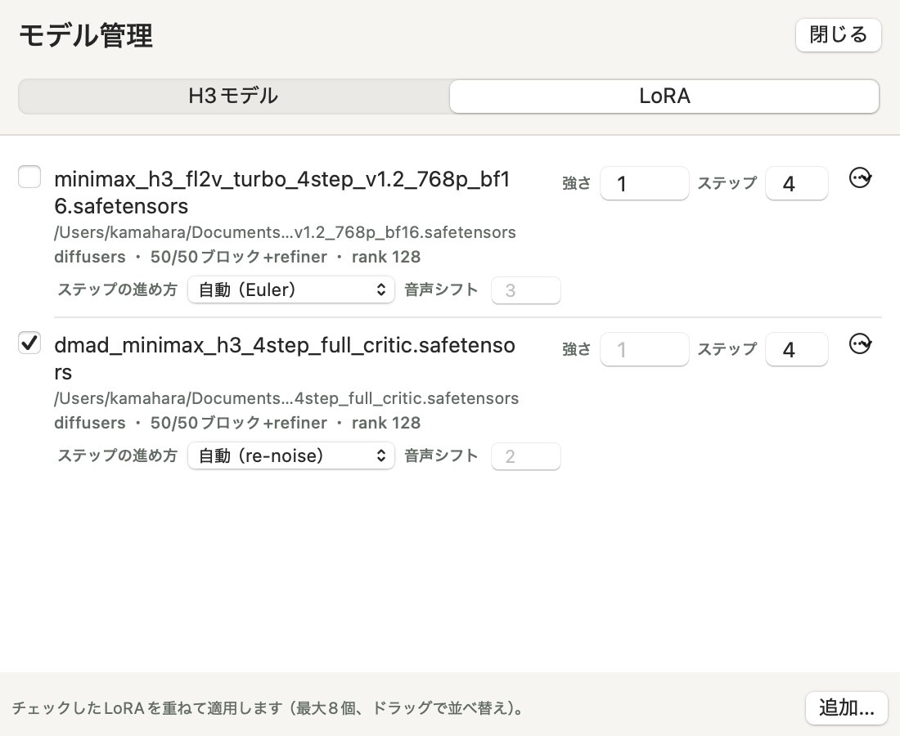

使い方
最初の1本ができたら、画像を使った生成やプロジェクトでの複数生成に進みましょう。内容はH3cApp v0.4.7に合わせています。
画像から動画をつくる
パネル左上で「画像から」を選ぶと、画像の使い方を2つから選べます。意味が大きく違うので、目的に合わせて選んでください。
| 最初・最後の画像 | 参照画像・動画・音声 | |
|---|---|---|
| 何をするか | 指定した画像から動き始める動画をつくります。最後の画像も指定すると、そこで終わるようにつながります。 | 画像・動画・音声の特徴（人物、雰囲気、音など）を参考にして新しい動画をつくります。最初のフレームが参照画像と同じになるとは限りません。 |
| 必要なモデル | FL2VA（最初にダウンロードするもの） | Ref2VA（あとから追加）。M5クラスで「高速（int8キャッシュ）」を使うなら、Ref2VA用のキャッシュも作ります。 |
| 指定のしかた | 「最初の画像」で画像を選び、必要なら「最後の画像も指定…」 | 「ファイルを選ぶ…」で追加。追加した順に1つ目、2つ目…として扱われます。順番を変えたいときは、取り除いてから追加し直します。 |
| 注意 | 画像は生成する画面の形に合わせて中央を切り抜きます。 | 音声だけを参照にはできません。画像か動画と組み合わせてください。大きな参照動画は時間が長くなります。 |
例
- 最初の画像：自分で撮った風景写真を指定し、「ゆっくり雲が流れ、木の葉が揺れる」といったプロンプトで動かす。
- 参照：キャラクターの画像を参照に入れ、「そのキャラクターが公園を歩く」といったプロンプトで新しい場面をつくる。
プロンプト欄のファイル名をクリックすると、使っている画像や動画の中身を確認できます。生成した動画も、プレビューの「参照に使う」で参照に追加できます。
プロジェクトと複数生成
プロジェクトは、プロンプトと設定、参照ファイルのコピー、生成した動画をまとめて保存するフォルダです。既定の保存先は ~/Movies/H3cApp/<名前> です。プロジェクトを開いていないときにできた動画は一時ファイルで、次の生成で消えます。
プロジェクトをつくる・開く
- 左上のプロジェクトメニュー（フォルダのアイコン）、またはメニューバーの「プロジェクト」から操作します。
- 「新規プロジェクト…」：名前と保存先を決めて作成します。今のプロンプトと設定、参照ファイルが入ります。
- 「プロジェクトとして保存…」：プロジェクトを開いていないときに、今のプロンプトと設定、プレビューに表示中の動画をまとめて保存します。
- 「プロジェクトを開く…」「最近のプロジェクト」：保存したプロジェクトを開くと、プロンプトと設定が保存時の状態に戻ります。
同じ設定で複数本つくる
- プロンプト欄の下の本数ボタンで「3 本」などを選びます（1〜20本）。
- 生成ボタンを押すと、シードを変えながら続けて生成し、プロジェクトに保存します。「ランダムさ」を「固定する」にしているときは、1本目だけそのシードを使い、2本目以降はランダムなシードで生成します。
- プロジェクトを開いていない状態で2本以上を選んで生成すると、「プロジェクトを選んで生成」の画面が出ます。「新しいプロジェクト」をつくるか、「既存のプロジェクト」を選びます。「キャンセル」なら生成せずに戻ります。
- 既存のプロジェクトを選んだとき、そこに保存されているプロンプトと設定が今のものと違うと、上書きしてよいか確認されます。「上書きして生成」で、今のプロンプトと設定で生成してプロジェクトに保存します。
できた動画を見る・使う
プロジェクトメニューの「プロジェクトの動画…」で一覧が開きます。
- 「表示」（またはプレビュー画像をクリック）：プレビューに表示し、その動画のプロンプトと設定もシードを固定してパネルに戻します。
- 「設定を戻す」：その動画のプロンプトと設定を、シードを固定してパネルに戻します。そのまま生成すると同じ動画をつくり直せます。
- 「参照に使う」：その動画を参照動画として追加します（Ref2VAが必要）。
- 「削除…」：動画と設定の記録をゴミ箱に移動します。
プレビュー上部の「使用した設定…」では、表示中の動画の設定を確認したり、「フォームに戻す」でパネルに戻したりできます。
速度に関わる3つの設定
「詳細設定」には、速さに関わる設定が3つあります。名前が似ていますが、それぞれ別のものです。
| 設定 | 選択肢 | 何が変わるか |
|---|---|---|
| 計算方式 | 高速（int8キャッシュ）／常駐（大容量メモリ向け、キャッシュ不要）／省メモリ（SSDストリーミング） | モデルの読み込み方と計算のしかた。Macの性能に合わせて選びます。「高速（int8キャッシュ）」はM5クラスのGPUが必要です。常駐はメモリに大きな余裕があるMac向けです。 |
| 速度 | 標準（高品質）／高速／最速 | 処理の一部を省いて速くします。省き方が変わるので、同じシードでも仕上がりが変わることがあります。 |
| 高速モード（試験的） | オン／オフ（既定はオフ） | M5の対応環境でだけ表示される別の機能です。長い動画ほど効果があり、短い・小さな動画では速くならないこともあります。同じシードでも仕上がりが変わります。 |
まずは既定の設定で小さな動画をつくり、待ち時間が長すぎるときに速度設定を試すのがおすすめです。詳細設定の「サイズ」には、今の設定でのおおよその所要時間が、このMacのこれまでの生成実績から表示されます。
詳細設定のすべての項目は、詳細設定の解説で説明しています。「生成ステップ数」「ノイズ除去の再利用」「使用する層数」もここにあります。層数を減らすと音声が壊れることがあるため、慣れるまでは変えないでください。
サイズと2倍拡大
プロンプト欄の下の「画面の形」と「大きさ」で選びます。大きいほど時間がかかります。
| 画面の形 | 小 | 中 | 大 |
|---|---|---|---|
| 正方形 | 256×256 | 512×512 | 768×768 |
| 横長 | 448×256 | 672×384 | 960×544 |
| 縦長 | 256×448 | 384×672 | 544×960 |
- 2倍に拡大：「大きさ」メニューの「2倍に拡大」をオンにすると、生成した動画を高品質なリサンプリングで縦横2倍にします。AIで細部を描き足す超解像ではありません。拡大にかかる時間はわずかです。例：横長・大を2倍にすると1920×1088になります（1920×1080ちょうどではありません）。
- カスタムサイズ：「詳細設定」の「サイズ」で「カスタムサイズを使う」をオンにすると、完成サイズを幅と高さで指定できます。生成するサイズは60万ピクセル以下という上限があります。
- 長さ：1〜15秒から選びます。モデルの仕組み上、実際の長さは少し長めになります（例：5秒を選ぶと約5.2秒）。
プロンプトの書き方
映っているもの、動き、カメラ、音を、短い文で順に書くと伝わりやすくなります。
- 何が映っているか：A small orange cat on a wooden floor
- どう動くか：plays with a ball of yarn, gentle movement
- カメラ：Static camera / Slow push-in camera
- 音：Soft room ambience, no speech, no music
音の様子もプロンプトで指定できます。話し声や音楽が不要なら「no speech」「no music」のように書きます。
モデル提供元のプロンプト作成ガイド（英語）も参考になります。このサイトの例は英語です。日本語のプロンプトでの仕上がりは確認していません。
追加モデル（LoRA）を使う（任意）
LoRAは、MiniMax H3に重ねて使う小さな追加の重みファイルです。少ないステップで生成できるようにする「Turbo」LoRAや、特定の見た目・動きを学習させたLoRAがあります。使わなくても、H3cAppはそのまま動画をつくれます。慣れてから試せば十分です。
LoRAファイルを用意する
H3cAppはLoRAをダウンロードしないので、MiniMax H3用の .safetensors ファイルを自分で入手します。ほかの動画モデル用のLoRAは使えません。
速く生成したいときは、lightx2vが公開しているMinimax-h3-Turbo（Hugging Face）が使えます。ファイル名で用途が分かれています。
fl2vが入ったもの：「文章から」と「最初・最後の画像」用ref2vが入ったもの：「参照画像・動画・音声」用4step／8step：そのLoRAで生成するときのステップ数
アプリは、どちらのモード用のファイルかを事前に判定できません。使うモードに合ったファイルをオンにしてください。
登録して使う

- ツールバーの「モデル管理」を開き、「LoRA」タブを選びます。
-
「追加…」で
.safetensorsファイルを選びます。読み込めるファイルなら、形式・対象のブロック数・rankが表示されます。MiniMax H3用として読み込めない場合は、その理由が表示されます。 - 使うLoRAをオンにします。モデル管理のチェックボックスか、「詳細設定」の「追加モデル（LoRA）」でオンにします。「強さ」は効き具合の倍率で、空欄は1です。
- いつもどおり生成します。オンにしたLoRAは、オフにするまでの生成すべてに使われます。
Turbo LoRAとステップ数
Turbo LoRAは、決まったステップ数（4や8）で生成するように学習されています。ファイル名に 4step などが入っていれば、アプリがそのステップ数を読み取り、オンにしたときに「生成ステップ数」を合わせます。オフにすると、ステップ数を自分で変えていなければ元に戻ります。
- 4ステップ用なら、ステップ数が既定の20から4に減るので、生成時間が大きく短くなります。仕上がりはLoRAを使わない場合と変わります。
- 学習したステップ数以外では品質が落ちます。ステップ数を手で変えた場合は、詳細設定の注意書きが赤くなります。
- ファイル名から読み取れない場合は、モデル管理の「ステップ」欄に入力します。空欄なら通常のLoRAとして扱われます。
- Turbo LoRAは1つだけオンにしてください。複数重ねると効果が強くなりすぎます。
ステップの進め方と音声シフト
少ないステップ向けのLoRAには、学習したときの「ステップの進め方」が決まっているものがあります。モデル管理では、LoRAごとに次の2つを設定できます。ふだんは「自動」と空欄のままで構いません。
- ステップの進め方：「自動」「Euler」「re-noise（LCM方式）」から選びます。
- Eulerは、H3cAppの標準の進め方です。lightx2vのTurbo LoRAはこちらで学習されています。
- re-noiseは、ComfyUIの「lcm」サンプラーと同じ計算です。LCMやDMD系のLoRAでよく推奨されます。re-noiseのときは、ノイズ除去の再利用は1になります。
- 自動は、LoRAファイルの説明に書かれた進め方を使います。書かれていなければEulerです。ファイル名からは判断しません。カッコ内に、ファイルから読み取った進め方が表示されます。
- 音声シフト：音声のノイズの減らし方を決める値です。空欄なら、ファイルの説明に書かれた値（なければ標準の3）を使います。
たとえばDMADの4ステップLoRAは、ファイルの説明に「re-noise」「音声シフト2」と書かれているので、「自動」のままで学習時の条件になります。説明が書かれていないLoRAは、配布元の説明を見て設定してください。学習時と違う進め方で動かすと、ぼやけたり残像が出たりします。
オンにしたLoRAのうち1つでもre-noiseならre-noiseで生成します。使った進め方と音声シフトは、「使用した設定…」と動画の記録に残ります。
知っておくこと
- 最大8個まで重ねられます。効果は足し合わされます。
- 3つの計算方式のどれでも使えます。LoRAの分だけ、1ステップあたりの時間は少し長くなります。
- オンにしたLoRAと強さは、生成した動画の設定やプロジェクトに記録されます。プロジェクトを開いたときにそのLoRAがモデル管理に登録されていないと、使えない旨が表示されます。
- モデル管理の「削除」は一覧から外すだけで、ファイルは消えません。
対応する形式：diffusers／PEFT、ComfyUI、kohya の各形式（BF16／F16／F32）。すべてのLoRAが使えるとは限りません。詳しくはREADMEのLoRAをご覧ください。
LoRAには、それぞれの配布元の利用条件があります。MiniMax H3のライセンス（ライセンスと利用条件）とあわせて確認してください。
上級者向け
ローカルAPI
H3cAppは、同じMacの中からだけ使えるHTTP APIを持っています（127.0.0.1）。スクリプトから生成を指示したい場合に使います。仕様はREADMEのAPIをご覧ください。
ソースからのビルド
配布アプリを使う場合は不要です。開発者向けの手順はREADMEのソースからのビルドにあります。